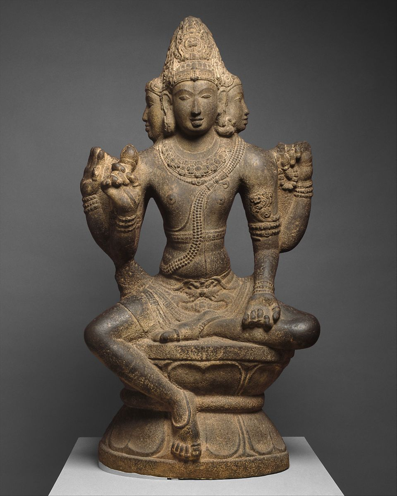

Om Namaḥ Śivāya
There is none second to Rudra! we offer him with his own share with his own essence
There is none second to Rudra! we offer him with his own share with his own essence
Soma is a unique concept in the Vedas addressed with many variations. As we have discussed in the beginning, the Vedic concepts used by Rishis are of 3 categories, the material, the divine, and the Yogic plane (adhibhautika, adhidaivika, and adhibhautika). Hence Soma is a Deva and a king, the same Soma is the home of ṛta RV1.43, Soma is also the juice of a plant used in Yagna as a substitute for Amṛta. The Soma herb as explained in Atharva Veda is the foremost and pure AV11.6.15 and is the divine energy of all flora/vegetation AV5.24.7,GS1.16. At times, Soma is the celestial Moon described in Atharva Veda 10 & 11.6.9 which says “Soma; whom the learned men call Chandrama the Moon making all delight” and “The Supreme Being keeps making Soma, the eternal delight” which is empirical to amṛta dripping from the crescent moon on Śiva’s head, but before we make this conclusion let’s explore further.  Sometimes, Soma is the full moon belonging to the Tiṣya/Pusya month, on this day oblations are given to Rudra. Monday is called Somavara and is the day of Śiva TS2.2.10. Kausitaki Brāhmaṇa 6 makes it very clear when it says “Rudra is Chandrama” which matches with Śatapatha Brahmāṇa of Śukla Yajur Veda 6.3 wherein the Mahadeva expansion of Rudra is Chandrama/moon. Similar to Rudra, the concept of Soma enters into various aspects of the Yajñá (Yagna). In this way, Soma enters into the offering of the Soma:latha juice, into clarified butter (ghee) used in Yagna, or the full moon, into medicines, into amṛta, and is the very ṛta. In other places, Somapavamana, meaning the purified/clarified/refined version of Soma, gave rise to both Indra and Viṣṇu during Yajñá RV9.96.5. This does not mean Viṣṇu takes physical birth because various divine concepts (Devas) emerge during various states of Yajñá performed by Prajāpati. Soma is also addressed as an additive to milk or ghee used as Medha (offering) of Yajñá. Soma is also used as a synonym for amṛta and it is this Soma that the Devas compete RV1.108, Indra more than others, as his strength comes from the divine Soma through which He and other Devas conquered all the worlds RV8.92/9.62.29. It is this Soma that gives them health, immortality, and strength to fight off Vṛtra, allowing room for ṛta. To this, the Maruts provide their support. Many dualities are paired among various divine concepts in the Vedas, like Mitra-Varuna, similarly, Rudra and Soma are paired together as a dual divinity across Vedas and are treated as one. Atharva Veda also pairs Bhava and Rudra as dual divinity AV11.2.15, similarly, all 8 aspects of Rudras become one concept.
त्र्यंबकं यजामहे सुगंधिं पुष्टिवर्धनं । उर्वारुकमिव
बंधनान्मृत्योर्मुक्षीय मामृतात् ॥ 7.59.12 Oh Triambaka (3
eyes/seasons), we offer our oblation (यजाम), nourish us (पुष्टि) and
bestow us (वर्ध) into the trance of fragrance (सुगंधिं) | May you
untie our bonds (बंधना) like a ripened gourd fruit (उर्वारु) unties
itself from the stem, and take us beyond death (मृत्यु) and deplete
(र्मु–क्षीय) our compulsions (र्मु) and take us (मा) into the
immortal state (अ॒मृत॑) (मृत्यु + मोक्ष (मोह+क्षेय) + मा-अमृतात्)
Please note: सुगंधिं does not mean physical perfume, but the
nostalgia one feels upon experiencing a certain sound or fragrance
or taste. So it means to bestow us into the sweetness of imagining
Thy Divinity during the transcendental states of dhyana/dharana.
र्क्षीय: means to deplete, and र्मुक्षीय means to deplete our
moha/compulsions arising out of Avidya. मा is also an Adj & Conj use
as negative as “not”.
~ Rig Veda 7.59
भुवनस्य पितरं गीर्भिराभी रुद्रं दिवा वर्धया रुद्रमक्तौ।
बृहंतमृष्वमजरं सुषुम्नमृधग्घुवेम कविनेषितासः ॥
Of all dimensions/celestial mansions (भुवन) are your progeny (गर्भिन्) and
you the father/source (पित), oh Rudra (रुद्र), by day/dawn (दिवा)
and by dusk/night ( रुद्रमक्तौ ) you encompass everything (वर्ध) |
Oh great and honorable and timeless/ageless (बृहंतमृ + ऋष्व + अजरं),
most gracious(सु-सुम्न), unconditional one, we/rishis sing our
poetic hymns (कविने) to the Supreme (इषितासः/iṣitāsaḥ). 6.49.10